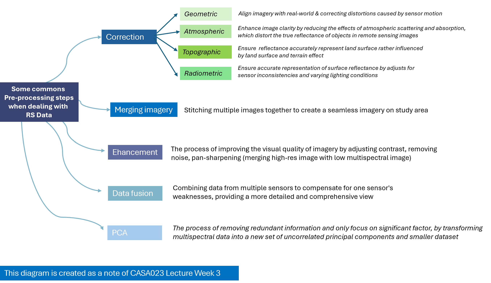
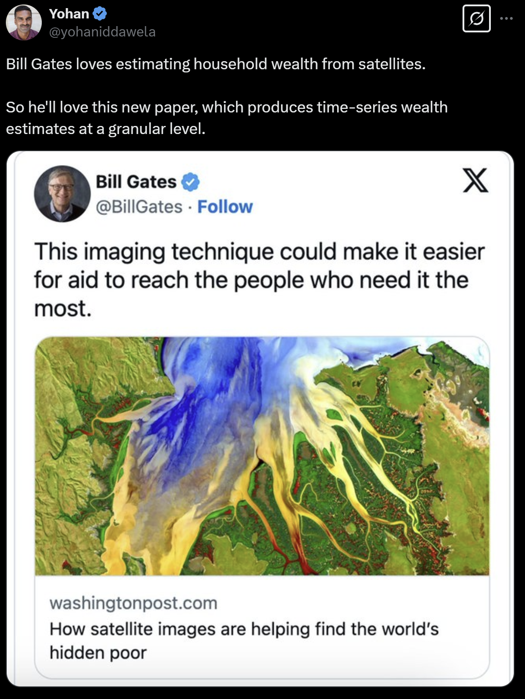
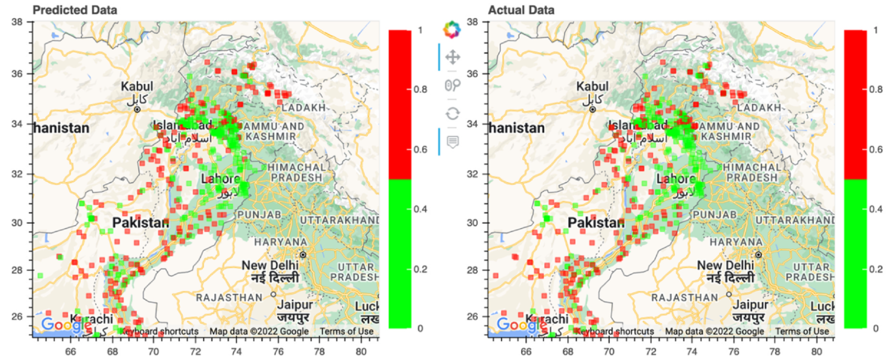
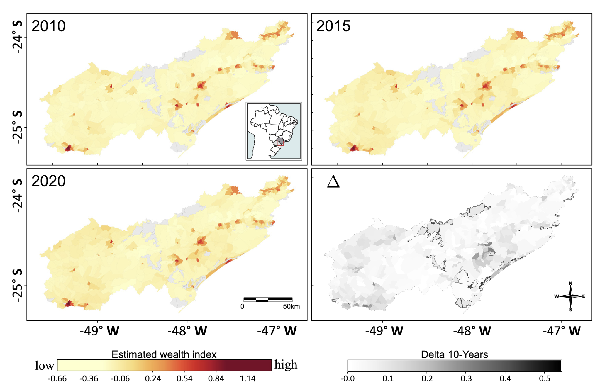
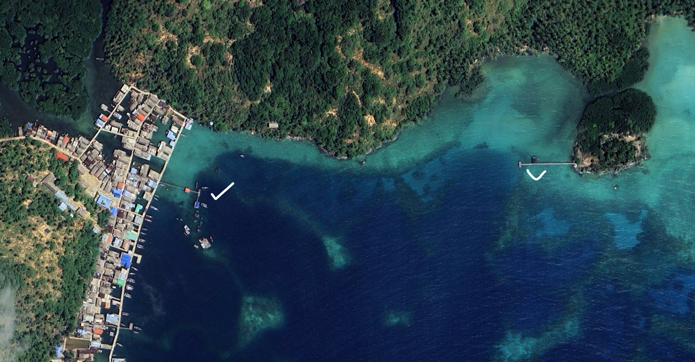

4 Image Correction
4.1 Summary
Here is my note based on this week’s lecture that explores steps people usually do in image correction. Although sometimes we get a “ready-to-use data” without the need to going through all of these process, having the basic understandings of these steps would help us understand the quality our data.

I also add several new terminologies, based on my own note during the lecture, related to image processing during this week’s summary
| Reflectance and radiance | Reflectance is basically the amount of light when a surface reflect the light, while radiance is the amount of light captured by sensor after interacting with Earth’s surface |
| Digital Number | A raw value for a given pixel that represents the intensity of radiation received in a specific spectral band. Digital number is important because it serves as a basis for image classification, for example digital number close to 0 represents object that absorbs much incoming light (low reflectance) such as water bodies or shadows. |
| Digital Object Substraction (DOS) | DOS is an atmospheric correction method that subtracts pixel values based on the amount of difference between digital values of dark objects (usually water bodies) with their corresponding reflectance |
| Collection, level, and tier | I will use the Landsat case to explain this terminology. In Landsat the collection would be named as Collection 1 and 2, it represents the sequence of launching time and their mission : Landsat 2 is the latest. Level 1 is a scaled digital number, while level 2 is further processed data. Meanwhile, tier 1 is the highest quality data from Landsat and suitable for time series analysis. source: https://www.usgs.gov/landsat-missions/landsat-collection-2-level-1-data |
4.2 Application
In this week application, I would like to explore the application of remote sensing on my favorite topic : data unavailability. In developing countries like Indonesia, maintaining updated and comprehensive data is challenging due to time and cost constraints. A study in Pakistan also mentioned similar challenges, particularly data related to socioeconomic condition that often limited and sporadic (Arshad et al. 2023). Honestly, this topic piques my interest because Bill Gates came across an article in The Washington Post and seems fascinated with the idea of using remote sensing to identify poverty, as he shared on X.

Figure 1 : Tweet about satellite imagery on detecting poor region. Source : Twitter
Arshad et al. (2023) addressed those challenges by deriving information through satellite imagery. They use publicly accessible high-resolution satellite imagery (Google Maps API with 16 zoom) and Landsat 7 (low resolution data). Google Maps API provides high-resolution imagery to identify man-made features like buildings and highway which are indicators of development levels meanwhile Landsat 7 is used to train Convolutional Neural Networks (a method of feature extraction from imagery in Machine Learning) in identifying nightlight bin (low to high). Areas with higher levels of economic activity and development tend to have more lights at night. This method will produce a map that indicates a poverty and development level compared to poverty line. The results are then validated using actual socioeconomic data from surveys. Below is a map where each point represents a poverty clusters (10x10 km area), comparing predicted and actual data. Green points indicate clusters above the poverty line, while red points indicates the opposite.

Figure 2 : Socioeconomic conditions compared to poverty line in Pakistan. Source : (Arshad et al. 2023).
When reflecting on the map above, I would prefer to visualize the classification results as polygon rather than points, as they were more intuitive. Additionally, it would be nice to map the difference across the years, Ben Abbes et al. (2024) just do this ! They use multispectral images (Landsat 5, 7,8) and Nightlight images (from Defense Meteorological Satellite Program (DMSP) and the Visible Infrared Imaging Radiometer Suite (VIIRS)) in Southeast Brazil. The classification result is represented using an estimated wealth index, and it can even map socioeconomic transformation over 10 years in a single map! I think the map is quite brilliant. He takes the delta between the latest and past data and visualizes it with a gradual color scale. The stronger the hue, the larger the margin

Figure 3 : Spatio-temporal mapping of wealth index estimations in Southeast Brazil. Source : Ben Abbes et al. (2024).
4.3 Reflection
I think performing Remote Sensing correction on R Studio is quite challenging, as I become more used to using ‘button’ in Remote Sensing application such as ENVI or SNAP. After this week’s lecture, I genuinely think that Remote Sensing is quite complex as it is not only an image but beyond the imagery each pixel is composed by digital number and it could be linked and better interpreted using regression too. Understanding the image classification using machine learning is also quite challenging for me, as they use new terminologies that I haven’t heard before such as convolutional neural network, epoch, and data training.
Honestly, remote sensing combined with machine learning quite scare me off. However, I try to look beyond the methodology instead focusing on how explanatory remote sensing can be when combined with classification and prediction task, tasks machine learning good at. I think looking beyond the methodology and focusing on the exciting application has also helped me me thrive on managing challenge during this Master’s. After reading the paper, I tried to delve further into the combination of remote sensing and machine learning. If I could turn back the time, I would like to deploy this combination to make my works faster. I recalled during my works years ago, the project needed to identify thousand ports across hundred of islands in Indonesia, and we did that manually ! If I understand correctly, I could combine image classification techniques, such as convolutional neural networks, with high-resolution imagery to detect local ports used for docking ship (typically made of wood or cement) in the ocean.

Figure 3 : Google Earth Imagery portraying local ports in Anambas Islands. Source : Google Earth, 2024